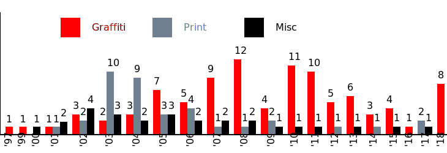

This network analysis graph shows the relationships between works with that were marked up with a location element tag and the countries that they originated from. The works are color coded red for graffiti tags and grey for installations.
~ ~ ~ ~ ~ ~ ~ ~ ~ ~ ~ ~
This network analysis graph shows the relationships between works with that were marked up with a location element tag and their mediums.
~ ~ ~ ~ ~ ~ ~ ~ ~ ~ ~ ~

This bar graph shows the number of works produced by Banksy each year with the medium types in different colors.